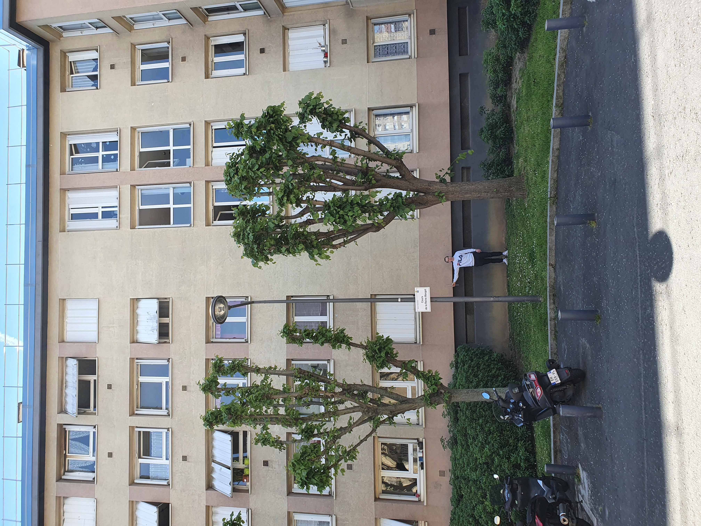

État de l'art - Sciences du numérique
Sujet : les méthodes pour mesurer la hauteur d'un bâtiment avec son smartphone
Partie simulation
Sélectionner les 5 meilleures méthodes [combinaison simplicité et précision], imposant de ne pas monter dans le bâtiment.
Faire l'expérience sur un bâtiment et comparer les mesures avec la hauteur connue [architecte].
Les 61 méthodes pour mesurer un bâtiment
Méthodes choisies
- Méthode 1 : Thalès sur les ombres ;
- Méthode 2 : Ombre et position du Soleil ;
- Méthode 3 : Trigonométrie version 1 ;
- Méthode 4 : Photographie avec échelle ;
- Méthode 5 : Photographie de face.
Batiment mesuré
Pour réaliser notre simulation, nous nous sommes rendus à Issy-les-Moulineaux.
L'adresse exacte est Cours de la Reine Margot.
D'après notre télémètre laser, la bâtiment mesure 15,83 mètres (corniche comprise).


Matériel utilisé
Nous avons utilisé différents outils pour réaliser notre simulation :
- Trois smartphones différents :
- iPhone XS Max
- iPhone XS
- Samsung Galaxy S10+ ;
- Un télémètre laser PARKSIDE S/N 83752 ;
- Un mètre enrouleur 200 cm ;
- Un mètre mesureur 150 cm ;
- Un bâton de 68,5 cm.